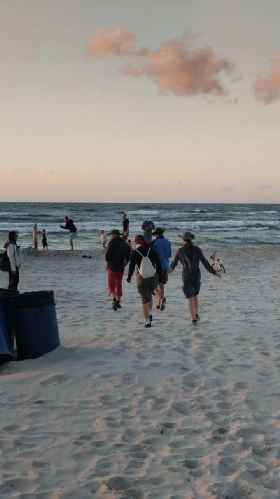
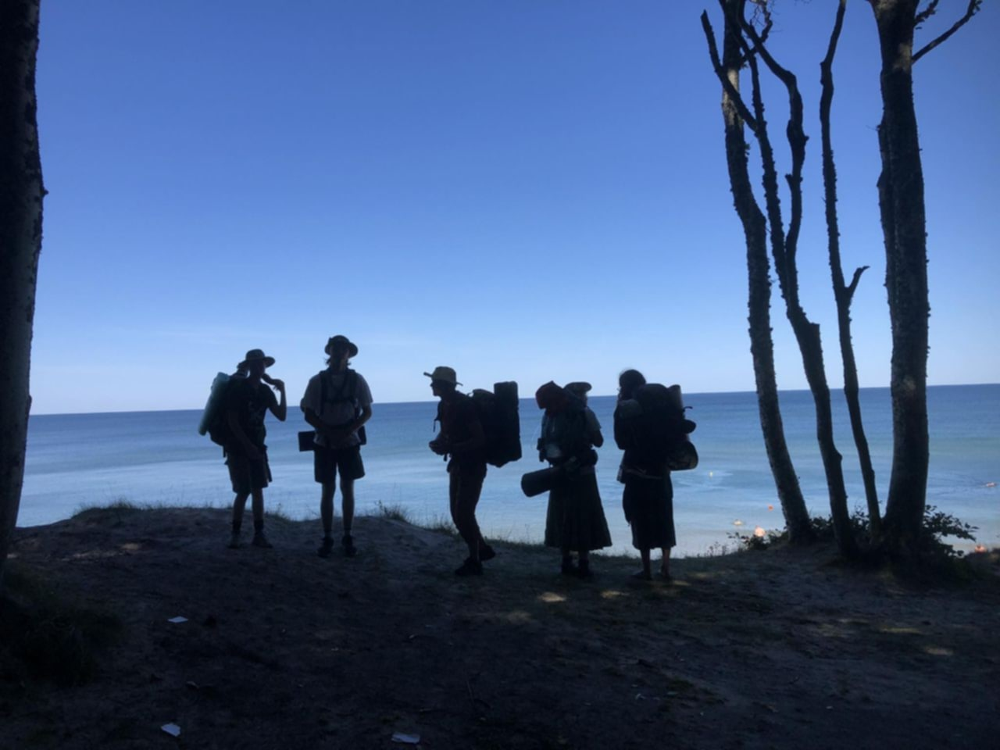
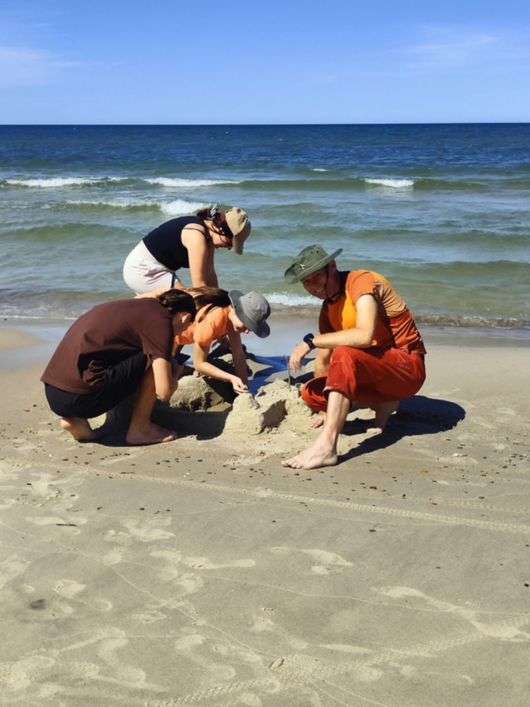
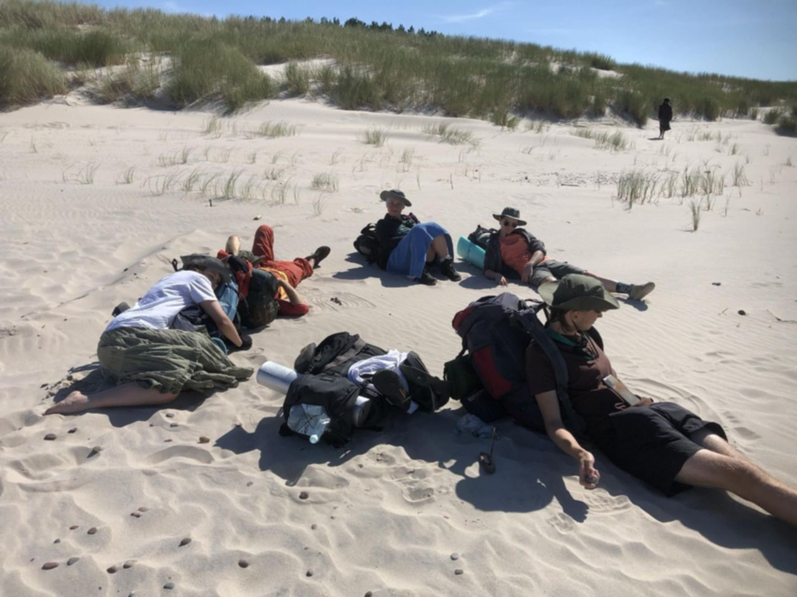
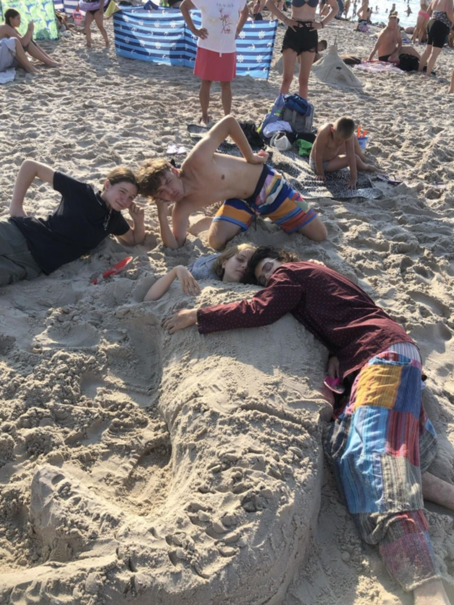

Podumowanie tego wyjazdu: 1300+ zdjęć 📸 101 kilometrów przebytej trasy 🗺️ 73 przywiezione kamienie 🪨 33 kilometry przebyte poza trasą na zwiedzaniu i zabawie 🏖️ 17 odcisków na stopach 🩹 12 pochłoniętych pizz 🍕 10 zjedzonych ryb 🎣 9 szczęśliwych wędrowców 🥾 8 rzeczy uznanych za zagubione 🎒 6 pojedynków w walce na dmuchane miecze ⚔️ 5 zdobytych latarni 🔦 3 znalezione bursztyny 💎 2 zakupione różowe miecze świetlne 🗡️ 1 cudowna przygoda 🎉 Zwiedzone latarnie: 📍Gdańsk 📍Czołpino 📍 Ustka 📍Jarosławiec 📍Darłowo
    